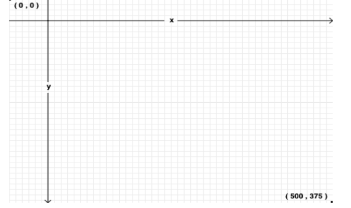
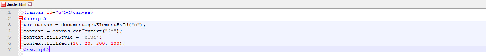
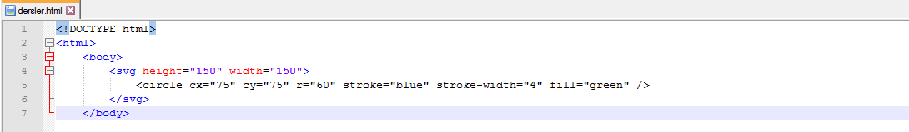
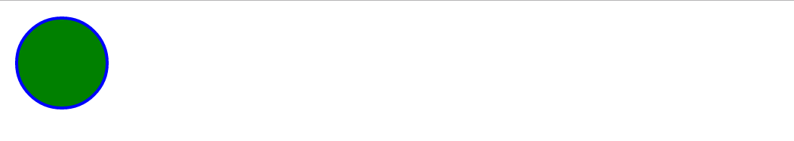

HTML 5 Grafik Elamanları
HTML5, grafik elemanlarını çizebilmek için <canvas> ve <svg> elemanlarını barındırır.
<canvas>
<canvas> elemanını, özellikle JavaScript kullanarak, farklı çizimler yaratmak için kullanabilirsiniz.
<canvas> elemanı, grafikler için sadece bir taşıyıcıdır. Grafik çizimi ise, JavaScript gibi bir betik (script) dili yardımıyla gerçekleştirilir.
<canvas> elemanı grafikleri çözünürlüğe (resolution) bağlıdır. Her çözünürlükte farklı kalitede görüntülenir. Olay yönetici desteği mevcut değildir. Metin yazımı düşük kalitededir. Grafik yoğunluklu oyunlar için önerilir. Sonuçta oluşan görüntü PNG ya da JPG dosyası olarak saklanabilir.
<canvas> elemanını kullanacaksanız, aşağıdaki özellikleri de atamanız tavsiye edilir:
- id: JavaScript kodunuzdan, <canvas>elemanına erişebilmek için bu elemana bir id değeri atamalısınız.
- width: <canvas> elemanının genişliği için gereklidir.
- height: <canvas> elemanının yüksekliği için gereklidir.
<canvas> elemanının kordinat sistemi
<canvas> elemanının tanımladığı koordinat sistemi aşağıdaki gibidir:
Aşağıdaki kod parçasında, fillRect(x, y , genislik, yukseklik) komutu ile içi dolu olan, sol üst köşesi (x,y)'de olan, genişliği ve yüksekliği verilen bir dikdörtgenin nasıl çizildiğini görebilirsiniz:
Bu örneğimizde x=10 y=20 noktalaraından başlayan 100x200 lük bir mavi diktörtgen çizdirdik.
Yukarda da gördüğünüz üzere, <canvas> elemanının, getContext adlı bir DOM metodu mevcuttur. getContext(‘2d'), HTML5 nesnesi içinde hazır bir ifadedir; çizimlerin farklı özellik ve metodlarına erişmenizi sağlar.
Aşağıdaki JavaScript metodlarını kullanarak nasıl "doğru" çizileceğini de görebiliriz:
- moveTo(x,y): Doğrunun başlangıç noktasını belirler.
- lineTo(x,y): Doğrunun bitiş noktasını belirler.
- stroke(): Doğruyu çizer.
svg Elemanı
Scalable Vector Graphics (Ölçeklenebilir Vektör Grafikleri), XML'de, iki boyutlu grafiklerin (2D) ve grafik uygulamalarının tanımlanması konusunda kullanılan bir dildir. <svg> etiketi de bu dosyaların HTML5'te kullanılmasına olanak veren etikettir.
SVG dosyalarında her eleman ve her özellik, canlandırılabilir (animate). Grafiklerin büyültüp küçültülmesi ile de görüntü kalitesi bozulmaz. SVG, genellikle sütun grafiği (bar chart) ve X,Y koordinatlarında 2D grafikler oluşturmak için kullanılır.
HTML5 doğrudan <svg> etiketini kullanarak bu grafikleri web sayfanıza gömebilir.
 Svg biçimindeki resimler oyunlar için yeterli değildir, daha çok harita vb uygulamalarda kullanılır.
@2016 Contact abdullahcelik6@gmail.com